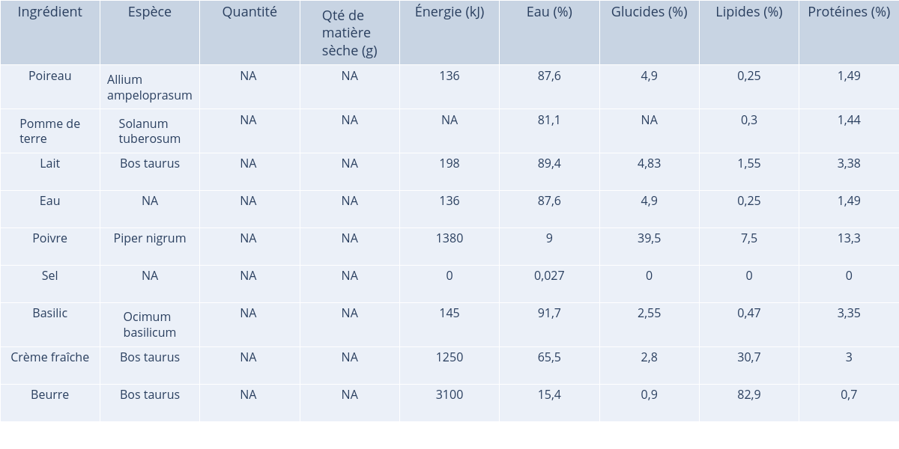

Name of the recipe: Potage velouté poireaux pommes de terre
URL of the recipe: https://www.marmiton.org/recettes/recette_potage-veloute-poireaux-pommes-de-terre_18971.aspx
Number of ingredients: 9
Number of specie found for the ingredients: 5
Ingredients that haven't match with a species: Eau, Sel
Phylogenetic diversity: 210.67
Weighted phylogenetic diversity: NA
Shannon's index: NA
Simpson's index: NA